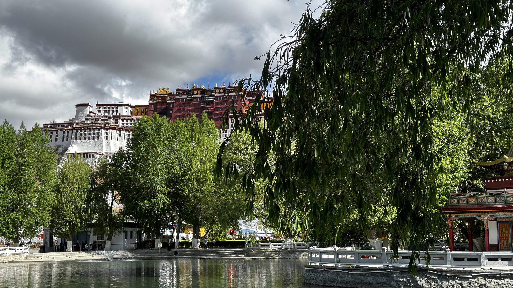
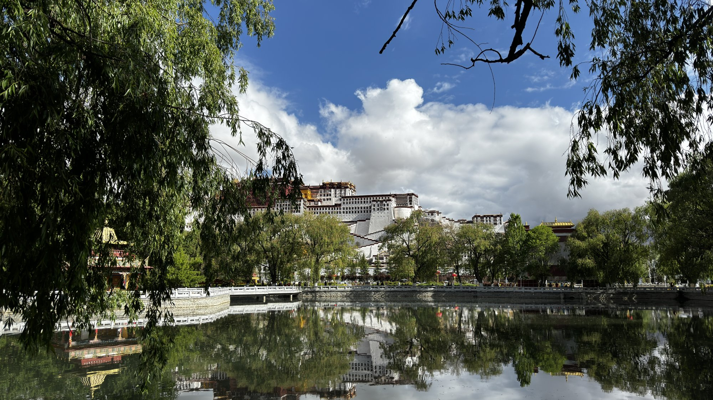
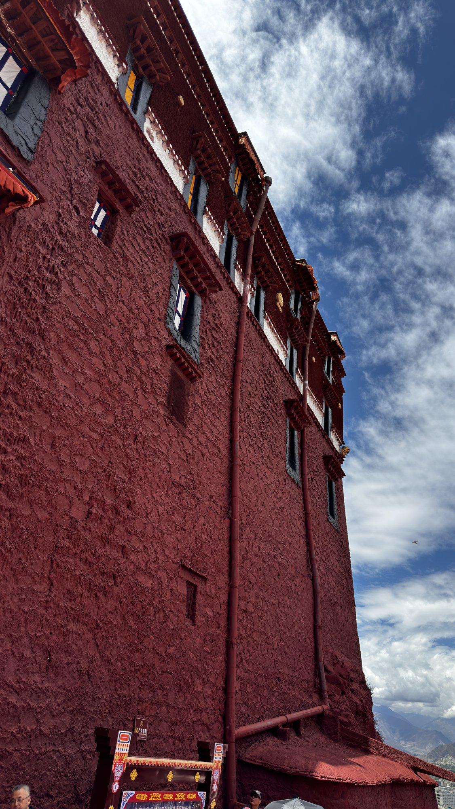
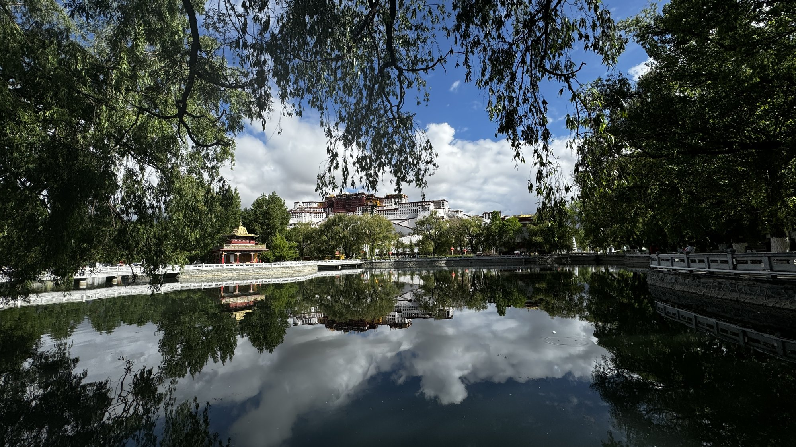
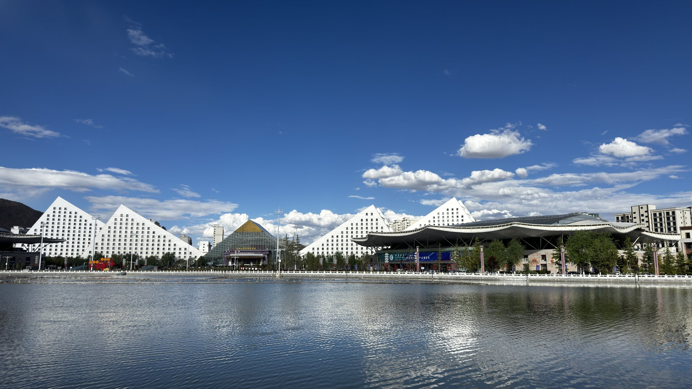

阿里大环线 · 第一站
拉萨
布达拉宫
世界屋脊的信仰中心，雪域高原的心脏
阿里大环线 · 第一站
世界屋脊的信仰中心，雪域高原的心脏

依山而建的宫殿群，气势恢宏
布达拉宫始建于公元7世纪，是松赞干布为迎娶文成公主而建。此后成为历代达赖喇嘛的冬宫与西藏政教合一的中心，是藏传佛教的圣地。
宫殿依玛布日山而建，红宫白宫交相辉映，共13层，高200余米，是世界上海拔最高、规模最大的宫殿式建筑群，被誉为"世界屋脊的明珠"。
行程的第一站，站在布达拉宫前仰望，蓝天白云之下的宫殿巍峨庄严，千年的信仰与荣耀在此凝固。



